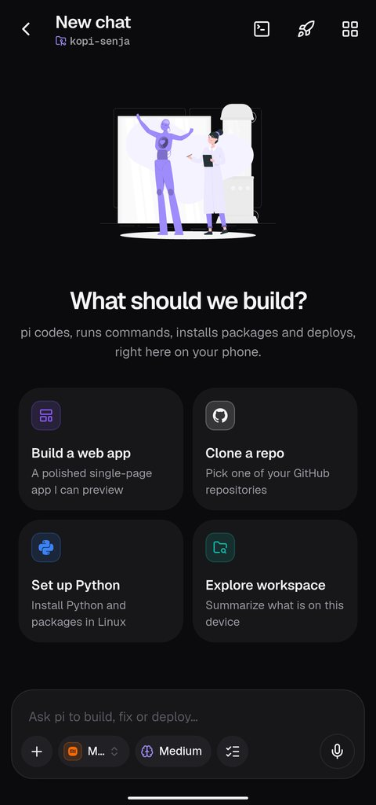
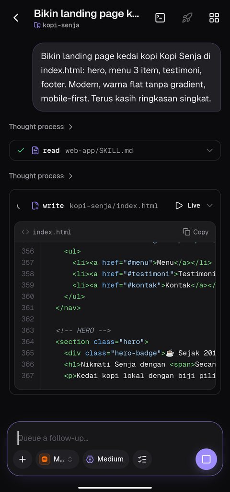
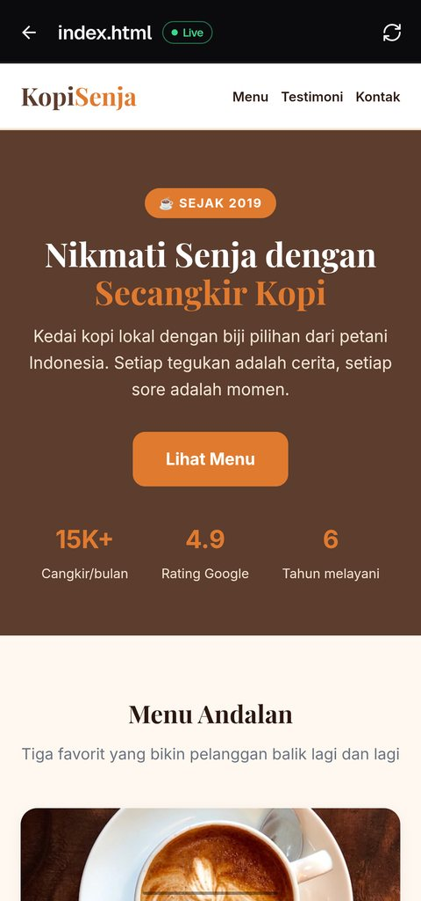
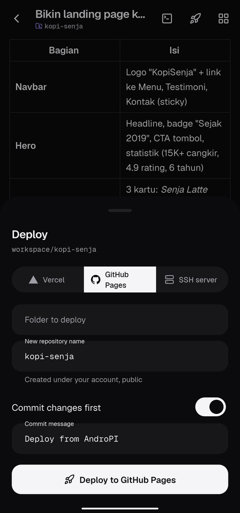
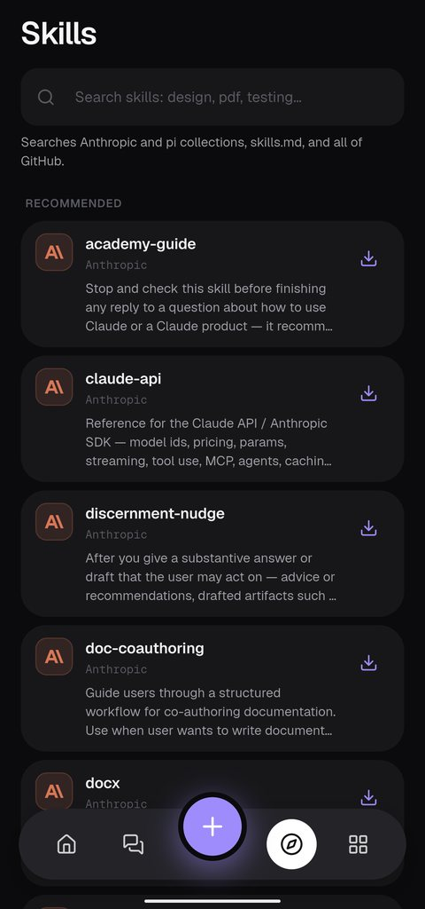
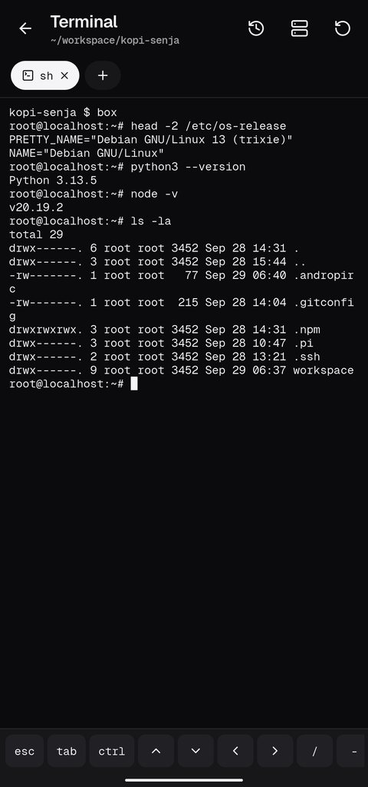

Say what you want to build
Start a chat in its own project folder, or open any folder on your phone. Attach a screenshot, or just talk.
AndroPI is an AI coding agent that lives on Android. Describe what you want. It writes the code, runs it in a real Linux, shows you a live preview and deploys it.
No laptop, no setup. Everything below happens on the phone in your hand.




Start a chat in its own project folder, or open any folder on your phone. Attach a screenshot, or just talk.
Code streams in as the agent types it. Every file it reads, every command it runs and every edit it makes is right there.
The live preview updates while the page is still being written. Scroll it, tap it, ask for changes.
Publish to GitHub Pages or Vercel, or push to your own server over SSH. Follow the CI run from the app.
apt, pip and npm work. The agent installs whatever your project needs, and you get a multi-tab terminal with SSH.
Your code and keys stay on your phone. Data only goes to the services you connect.
Let pi ask before risky commands, before every change, or never.
Sign in with a device code. Clone, commit, push, branch, and turn issues into pull requests.
See the diff of what the agent changed and roll it back in one tap.
Give the agent new abilities. Install skills from a searchable catalogue or connect any MCP server.

Queue tasks, run agents in parallel and schedule jobs. A notification tells you when pi is done or needs you.

Not sure? Almost every phone from the last six years is arm64.
Check with uname -m in any terminal app: aarch64, armv7l or x86_64. Every build is on the releases page.
Built with Flutter, the pi agent, Node.js, Termux packages, proot and MCP.